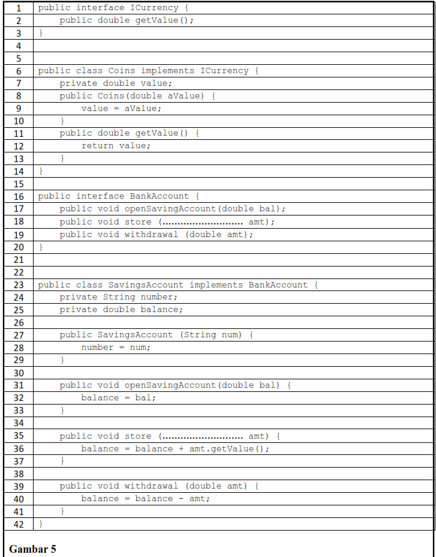
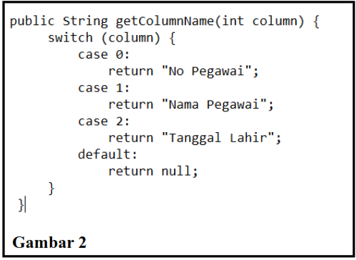
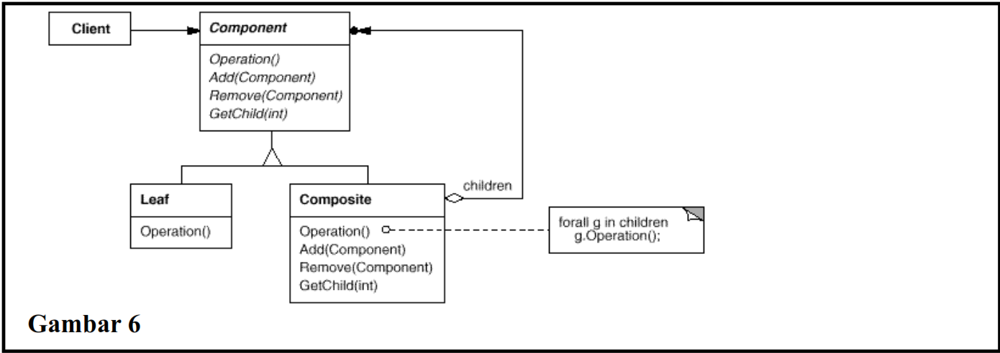
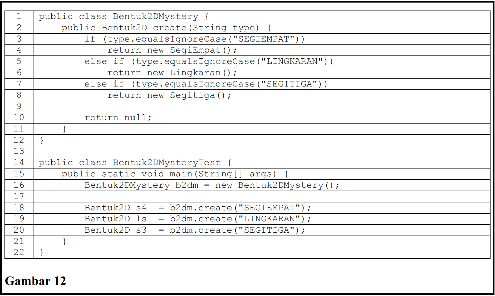
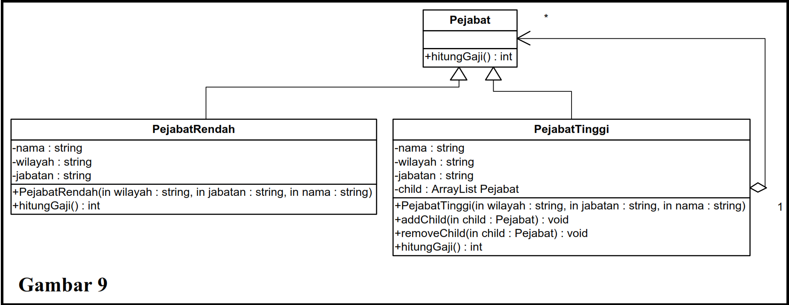

Kuis UAS PBO Genap 25/26
Mata Kuliah: Pemrograman Berorientasi Objek • Jumlah soal: 60 MAAF KALAU SOALNYA DUPLIKASI
Di bawah ini termasuk dalam tipe Creational Pattern, yaitu:
Jawaban bisa lebih dari satu.
Lihat Gambar 4 dan Gambar 5. Andaikan sebuah kelas Cheque ditambahkan.
Supaya Cheque bisa disimpan SavingsAccount, kita tidak
perlu melakukan modifikasi terhadap fungsi store di interface
BankAccount dan kelas SavingsAccount. Hal ini terjadi
karena prinsip OCP telah berhasil diimplementasikan dengan baik. Artinya fungsi
store tidak mengalami perubahan (closed for modification) untuk setiap
penambahan kelas yang mengimplementasikan interface
......................
Sementara itu, kelas implementor dapat bertambah terus (open for extension) yang
mengakibatkan fungsionalitas dari fungsi store bertambah, tanpa harus
melakukan perubahan terhadap kode program.


Berikut ini merupakan pernyataan yang BENAR tentang pattern adalah:
Pilih semua pernyataan yang benar.
Berikut ini yang termasuk di dalam element dari design pattern:
Pilih semua elemen yang benar.
Di bawah ini merupakan kelas Counter:
public class Counter {
int count = 0;
public Counter() {}
public int increment() {
return ++count;
}
public int decrement() {
return --count;
}
}
Di bawah ini merupakan kelas pengujian untuk Counter:
public class CounterTest extends junit.framework.TestCase {
Counter counter1;
public CounterTest() {
}
protected void setUp() {
counter1 = new Counter();
counter1.count = 1;
}
public void testIncrement() {
assertTrue(counter1.increment() == 1);
}
public void testIncrementFalse() {
assertFalse(counter1.increment() == 0);
}
public void testDecrement() {
assertTrue(counter1.decrement() == -1);
}
}
Apabila kelas pengujian tersebut dijalankan, test case mana sajakah yang failed?
Jawaban bisa lebih dari satu.
Lihat Gambar 2. Method getColumnName tersebut digunakan untuk:

Perhatikan potongan kode berikut ini:
public Mahasiswa showMahasiswa(String query) {
con = dbcon.makeConnection();
String sql = "SELECT m.*, p.* FROM mahasiswa as m JOIN prodi as p ON m.kode_prodi = p.kode_prodi WHERE (m.npm LIKE"
+ "'%" + query + "%'"
+ "OR m.nama_mhs LIKE '%" + query + "%'"
+ "OR p.nama_prodi LIKE '%" + query + "%')";
Mahasiswa m;
//kode yang lain dihilangkan
return m;
}
Berdasarkan kasus pada tutorial, potongan code berikut ini terletak pada persistence layer dan merupakan potongan code yang benar untuk mengambil data mahasiswa dari database berdasarkan kunci pencarian tertentu.
Pada package view (interface layer), untuk membuat UI yang akan dilihat oleh pengguna, kita harus membuat kelas baru dengan tipe:
Program JAVA dapat menyimpan data dalam penyimpanan sekunder berupa file Microsoft Access.
Lihat Gambar 10. Eksekusi perintah berikut ini pada main program akan mengakibatkan terjadinya kesalahan:

Mysterious ms = new Mysterious();
Menyusun grup dari sebuah objek atau kelas ke dalam struktur yang lebih besar, merupakan pengertian dari tipe pattern.
Perhatikan potongan kode berikut:
private void btnDeleteActionPerformed(java.awt.event.ActionEvent evt) {
pc.deleteDataProdi(txtKode.getText());
setEditDeleteBtn(false);
clearText();
showProdi();
}
Dalam konteks arsitektur layer, code di atas seharusnya diletakkan pada kelas...
Lihat Gambar 5. Untuk menerapkan princip Liskov's Substitution Principle, maka tipe parameter
amt pada fungsi store (baris 18 dan 35) adalah ..............
Prinsip perancangan dimana satu unit kode seharusnya selalu bertanggung jawab pada satu dan hanya satu tugas (task) disebut dengan ...
Perhatikan potongan kode berikut:
package entity;
public class Mahasiswa {
private String npm;
private String namaMhs;
private String kodeprodi;
//kode lain dihilangkan
}
Berdasarkan kasus pada tutorial, potongan code di atas terletak pada entity layer dan merupakan kode yang benar untuk menunjukkan relasi antar entity Prodi dan Mahasiswa.
Berikut ini adalah arsitektur dari aplikasi yang umum dibuat...
Jawaban bisa lebih dari satu.
Perhatikan Gambar 13. Berikut ini merupakan test case yang benar untuk pengujian kelas
BankAccount apabila diuji dengan class testing.
amount : 0, balance: 5000, expected output: "amount must be >= 0"

Perhatikan Gambar 13. Berikut ini merupakan test case yang benar untuk pengujian
kelas BankAccount apabila diuji dengan class testing.
amount : 5000, balance: 5000, expected output: --
Sebuah kampus ingin membuat program untuk memonitor IPK mahasiswa. Jika terdapat perubahan pada IPK mahasiswa, maka dosen pembimbing dan orang tua/wali mahasiswa akan diberi notifikasi. Untuk memecahkan permasalahan ini dapat menggunakan solusi design pattern. Yang manakah yang menjadi Subject-nya?
Isikan dengan pasangan yang sesuai ...
Clients should not be forced to depend upon interfaces that they do not use. Interface harus dibuat minimal sesuai dengan kebutuhan kelas.
Sebuah fungsi yang menggunakan referensi sebuah kelas induk harus dapat digunakan juga oleh objek yang bertipe kelas turunan dari kelas induk tersebut.
Sebuah fungsionalitas baru ditambahkan dengan membuat kelas, method atau field baru, bukan menggantikan kode yang sudah teruji.
Lihat Gambar 11. Untuk memastikan bahwa hanya boleh dibuat 1 objek dari kelas
Administrator, maka code yang hilang pada gambar tersebut diisi dengan:

Lihat Gambar 6. Dibutuhkan adanya atribut bertipe Collection pada kelas
Composite untuk menampung objek-objek bertipe Component.

Kode program pada Gambar 12 merupakan kode program untuk pattern

Gambar 3 berikut ini menunjukkan penerapan dari Dependency Inversion Principle.

Di bawah ini yang merupakan tipe-tipe pattern:
Jawaban bisa lebih dari satu.
Kode program pada Gambar 10 merupakan kode program untuk pattern
Perhatikan potongan kode berikut:
public Pegawai displayPegawai(String name) {
return dao.displayPegawai(name);
}
Dalam konteks arsitektur layer, code di atas seharusnya diletakkan pada kelas...
Dalam konteks arsitektur layer, akses database dilakukan pada kelas dao. Diberikan potongan kode seperti pada Gambar 1. Dari baris-baris kode tersebut, bagian mana yang menunjukkan penggunaan kode yang salah (diisi dengan nomor bagian)?

Adanya perubahan pada state dari sebuah objek, maka semua objek yang dependent terhadap objek tersebut juga akan diberitahu dan update secara otomatis, merupakan pengertian dari pattern
Objek yang menyimpan status dalam penyimpan sekunder (file, basis data):
Sebuah kampus ingin membuat program untuk memonitor IPK mahasiswa. Jika terdapat perubahan pada
IPK mahasiswa, maka dosen pembimbing dan orang tua/wali mahasiswa akan diberi notifikasi. Untuk
memecahkan permasalahan ini dapat menggunakan solusi design pattern. Dimanakah terdapat atribut
bertipe Collection untuk menampung kelas-kelas Observer?
Berikut ini merupakan level dalam pengujian berorientasi objek (object oriented testing), KECUALI:
Di bawah ini merupakan kelas Concat:
public class Concat {
public Concat() {}
public String concatenate(String firstName, String lastName)
{
return firstName + " " + lastName;
}
}
Di bawah ini merupakan kelas pengujian untuk Concat:
public class ConcatTest extends junit.framework.TestCase {
public ConcatTest() {}
public void testConcatenate() {
Concat C = new Concat();
String result = C.concatenate("Michael","Jordan");
................................................ // lengkapi code ini
}
}
Code berikut dapat digunakan untuk melengkapi potongan code yang hilang sehingga pengujian passed:
Berikut ini merupakan helper methods yang digunakan untuk membantu menentukan apakah sebuah fungsi berperilaku benar atau tidak.
Yang diuji dalam unit testing dapat berupa
Menciptakan sebuah instance dari beberapa kemungkinan kelas turunan tergantung pada data inputan yang tersedia, merupakan pengertian dari pattern
Berikut ini merupakan pernyataan yang BENAR tentang pattern pada Gambar 3:
Pilih semua pernyataan yang benar.
Apabila didefinisikan bahwa sebuah operasi yang bisa dikenakan atas tabungan adalah membuka tabungan, menyimpan uang,
dan menarik uang, maka interface BankAccount pada Gambar 5 sudah memenuhi prinsip:
Perhatikan potongan method berikut:
public void namaMethod() {
List dataProdi = pDao.showProdi();
for (int i = 0; i < dataProdi.size(); i++) {
cmbProdi.addItem(dataProdi.get(i));
}
}
Method berikut ini terdapat pada interface layer dan merupakan method yang benar untuk memasukkan data prodi ke combo box prodi.
Di bawah ini merupakan kelas Counter:
public class Counter {
int count = 0;
public Counter() {}
public int increment() {
return ++count;
}
public int decrement() {
return --count;
}
}
Di bawah ini merupakan kelas pengujian untuk Counter:
public class CounterTest extends junit.framework.TestCase {
Counter counter1;
public CounterTest() {
}
protected void setUp() {
counter1 = new Counter();
counter1.count = 1;
}
public void testIncrement() {
assertTrue(counter1.increment() == 1);
}
public void testIncrementFalse() {
assertFalse(counter1.increment() == 0);
}
public void testDecrement() {
assertTrue(counter1.decrement() == -1);
}
}
Apabila kelas pengujian tersebut dijalankan, maka akan menghasilkan 100% failed.
Pada class DAO terdapat dua method dari kelas Statement, yaitu executeQuery() dan
executeUpdate(). Method executeQuery() digunakan untuk
Sebuah kampus ingin membuat program untuk memonitor IPK mahasiswa. Jika terdapat perubahan pada IPK mahasiswa, maka dosen pembimbing dan orang tua/wali mahasiswa akan diberi notifikasi. Untuk memecahkan permasalahan ini dapat menggunakan solusi pattern
Single Responsibility Principle dan Interface Segregation Principle pada prinsipnya pattern yang digunakan untuk menurunkan kohesivitas
Lihat Gambar 6. Kelas Leaf pada Composite Pattern memungkinkan untuk memiliki struktur pohon lain di
dalamnya.
Sebuah kampus ingin membuat program untuk memonitor IPK mahasiswa. Jika terdapat perubahan pada IPK mahasiswa, maka dosen pembimbing dan orang tua/wali mahasiswa akan diberi notifikasi. Untuk memecahkan permasalahan ini dapat menggunakan solusi design pattern. Yang manakah yang menjadi Observer-nya
Jawaban bisa lebih dari satu.
Berikut ini merupakan komponen-komponen UI pada Netbeans
Pada prinsip perancangan kelas, perubahan pada satu kelas tidak memiliki pengaruh yang besar pada kelas lain disebut dengan ... coupling
Pada class DAO terdapat dua method dari kelas Statement, yaitu executeQuery() dan
executeUpdate(). Method executeUpdate() digunakan untuk
Berikut ini merupakan pernyataan yang BENAR tentang pattern pada Gambar 4 dan Gambar 5, KECUALI:
Pilih semua pernyataan yang benar, lalu cari yang KECUALI.
(LIHAT GAMBAR 8 DAN GAMBAR 9)
Potongan main program:
PejabatTinggi Gub = new PejabatTinggi("D.I.Yogyakarta","Gubernur","Sultan Hamengku Buwono X");
PejabatTinggi B = new PejabatTinggi("Bantul","Bupati","Suharsono");
PejabatTinggi S = new PejabatTinggi("Sleman","Bupati","Sri Purnomo");
PejabatRendah Bh = new PejabatRendah("Berbah","Camat","Tina Hastani");
PejabatRendah C = new PejabatRendah("Cangkringan","Camat","Edi Harmana");
PejabatRendah D = new PejabatRendah("Depok","Camat","Budiharjo");


Untuk membuat hirarki seperti Gambar 8 code main program yang BENAR adalah:
Jawaban bisa lebih dari satu.
Perhatikan potongan kode berikut:
private void buttonActionPerformed(java.awt.event.ActionEvent evt) {
MahasiswaView mv = new MahasiswaView();
this.dispose();
mv.setVisible(true);
}
Code berikut terletak pada interface layer pada kelas ProdiView dan berfungsi untuk:
Untuk memanfaatkan komponen table pada UI untuk menampilkan dan berinteraksi dengan data, kita perlu membuat kelas table untuk mempermudah dalam menampilkan data atau mengambil data dari komponen table. Kelas table tersebut harus merupakan turunan dari kelas:
Perhatikan potongan kode berikut:
public TableMahasiswa showMahasiswa(String query)
{
List dataMahasiswa = mDao.showMahasiswa(query);
TableMahasiswa tableMahasiswa = new TableMahasiswa(dataMahasiswa);
return dataMahasiswa;
}
Berdasarkan kasus pada tutorial, code tersebut terletak pada control layer dan merupakan method yang benar untuk menampilkan semua data mahasiswa.
Perhatikan Gambar 14. Berikut ini adalah pernyataan yang BENAR untuk test case untuk menguji fungsi yang ada pada Gambar 14.

Pilih semua pernyataan yang benar.
Menggabungkan beberapa design pattern dapat dilakukan sebagai solusi untuk suatu permasalahan.
Jika pada program terdapat lima kelas entity yang harus dibuat persisten, maka programmer direkomendasikan membuat DAO sejumlah (isilah titik-titik dengan angka)....
Mempersiapkan data yang dibutuhkan untuk menjalankan pengujian berorientasi objek dilakukan pada:
Perhatikan potongan kode berikut:
public void updatePegawai(Pegawai p) {
makeConnection();
String sql = "UPDATE Pegawai SET gaji = ' " + p.getGaji() +
" ' WHERE name = ' " + p.getName() + " ' ";
//code yang lain dihilangkan
}
Dalam konteks arsitektur layer, code di atas seharusnya diletakkan pada kelas...
Pembuatan hirarki seperti pada Gambar 7 dapat diselesaikan menggunakan pattern: